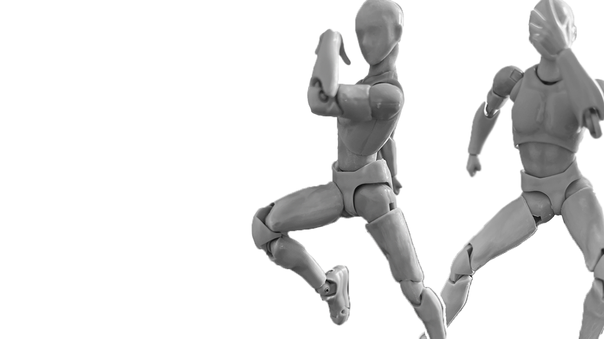
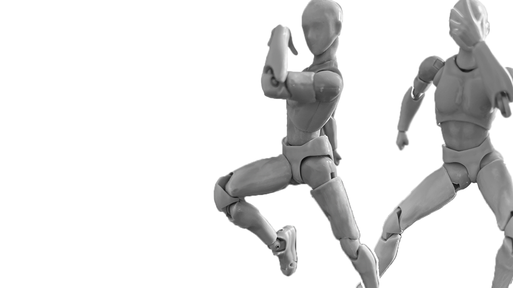

Name - Caesar and Joseph Pose
Origin - Jojo’s Bizarre Adventure: Battle Tendency (Chapter 22)
Date - April 11, 1988
By - Hirohiko Araki
Caesar Zeppeli is determined to fight the three pillar men to avenge the death of a innocent kid. Before the fight, Caesar and Joseph Joestar pose together in a "menacing" pose.